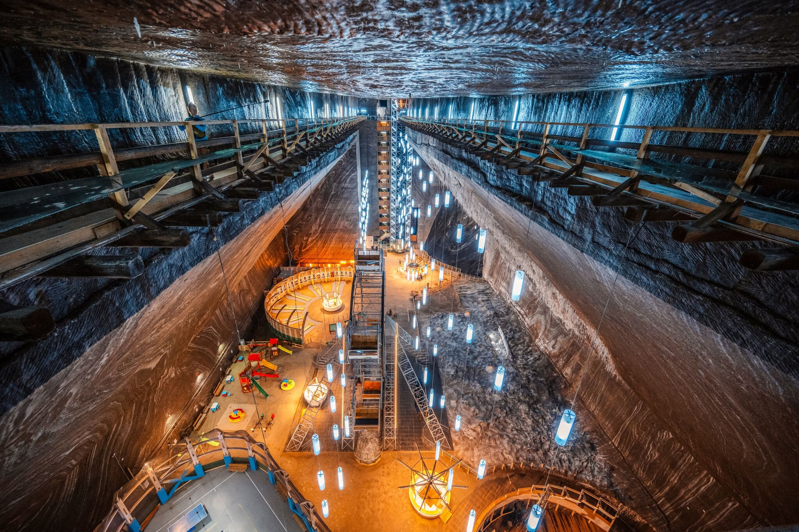
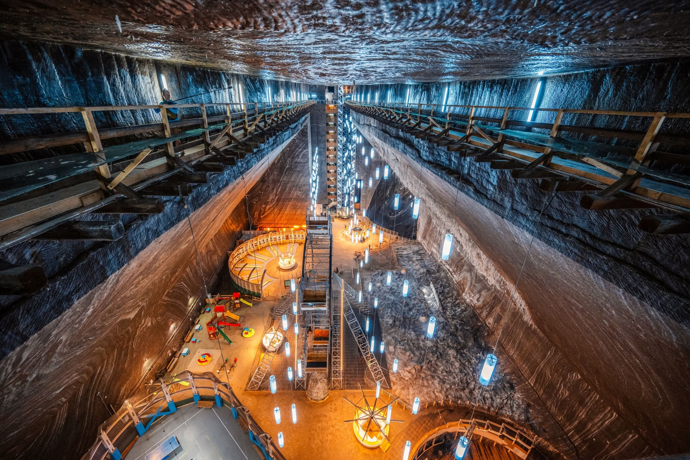
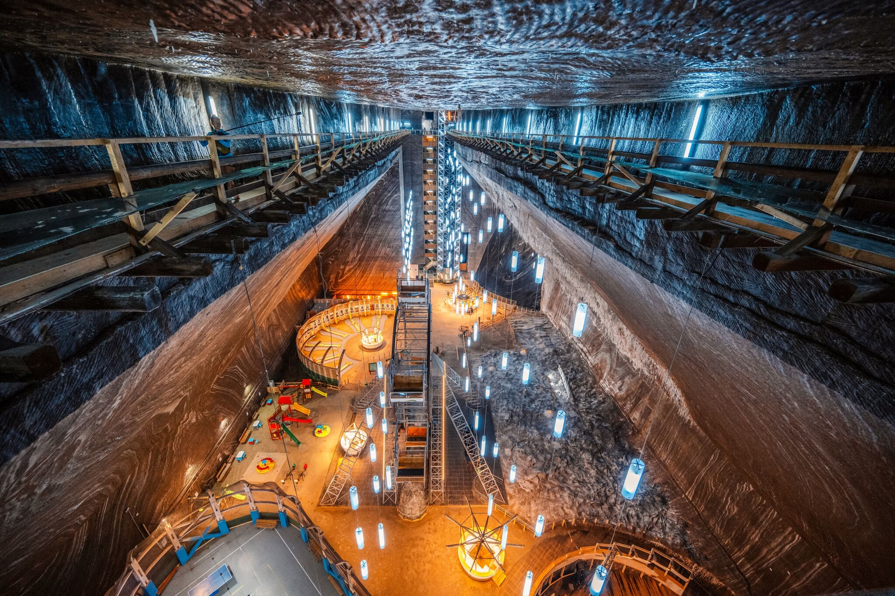
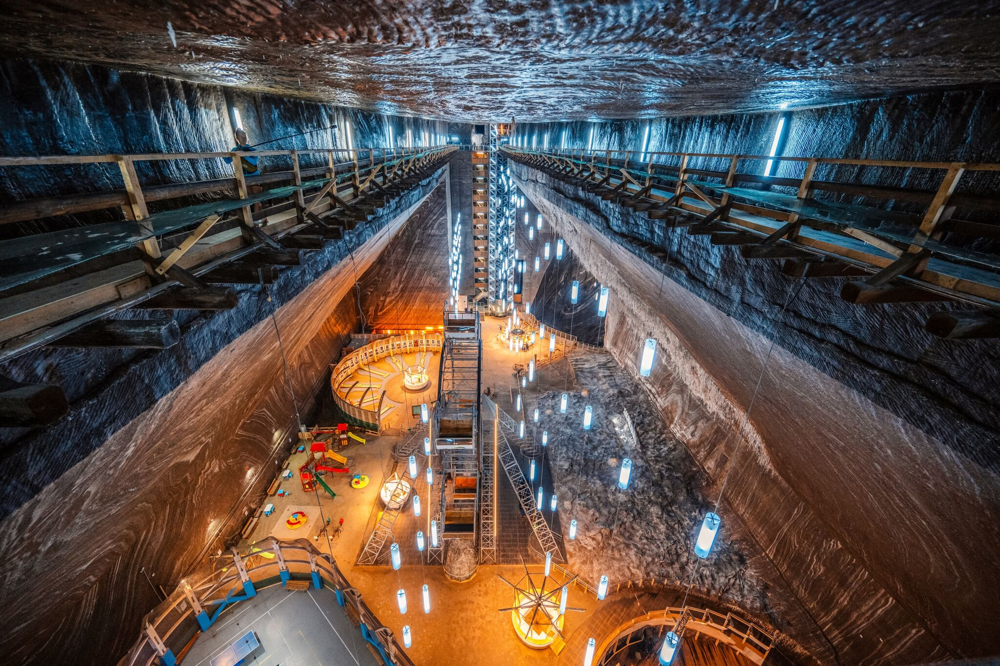

A Tordai-hasadék körülbelül 150 millió év alatt alakult ki. A formálódása a Hesdát-patak eróziós munkájának köszönhető, amely fokozatosan bevágódott a jurakori mészkőből álló Torockói-hegységbe. A vízfolyás lassan kimosta és elmélyítette a kőzetet, így jött létre a látványos szurdokvölgy, amely ma is folyamatosan formálódik. A hasadék mindössze 1270 méter hosszú, mégis rendkívül látványos, mivel mindkét oldalán 200–250 méter magas mészkősziklák emelkednek. Ezek a meredek falak impozáns látványt nyújtanak, és különleges élményt kínálnak a természetjáróknak.
A természeti szépsége mellett több legenda is fűződik a Tordai-hasadékhoz, amiért a legendák szurdokának nevezik. Az egyik legismertebb történet szerint Szent László királyt kun harcosok üldözték, és hogy megmeneküljön, lovával a sziklára dobbantott. A hegy ettől kettévált, ő átugratott a túloldalra, az üldözői pedig a szakadékba zuhantak. A legenda szerint a hasadék két oldala még ma is tökéletesen illeszkedik, csak az időjárás morzsolta le az éleket. Egy másik monda II. Rákóczi Ferenc híréhez, Balikához kapcsolódik, aki a szabadságharc idején a hasadék barlangjaiban keresett menedéket. A néphit úgy tartja, hogy ha vihar közben villámlik, a barlangok környékén még ma is feltűnik az alakja. A Tordai-hasadék így nemcsak földtani szempontból különleges, hanem a magyar történelemhez és néphithez is szorosan kapcsolódik, gazdagítva Erdély kulturális örökségét.
A Tordai sóbánya a világ egyik leglátványosabb és legkülönlegesebb földalatti komplexuma, amelyet az emberek hoztak létre egy különleges természeti környezetben, Erdély szívében. Ez a sóbánya akkor keletkezett, amikor több millió évvel ezelőtt a térséget borító tenger elpárolgott, és vastag sórétegek rakódtak le a föld alatt. Az évszázadok során az emberek ezeket a sórétegeket bányászták ki, miközben egy egyedülálló, művészien kialakított földalatti tájat hoztak létre. A Tordai sóbánya ma nemcsak a sóbányászat történetének emléke, hanem egyben népszerű turisztikai látványosság is, amely évente sok ezer látogatót vonz. A hatalmas, világítóbarlangok, a különleges természeti formák és a modern szórakozási lehetőségek különleges élményt nyújtanak mindenkinek, aki betér ide. Érdekesség, hogy a bánya hatalmas sótartalma elegendő lenne ahhoz, hogy a világ teljes sóigényét akár hatvan évig fedezze, ha erre szükség lenne.
A Tordai sóbánya hivatalos oldala (román és angol nyelvű)